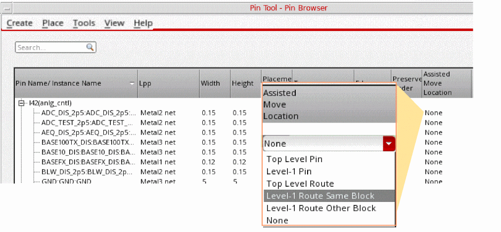
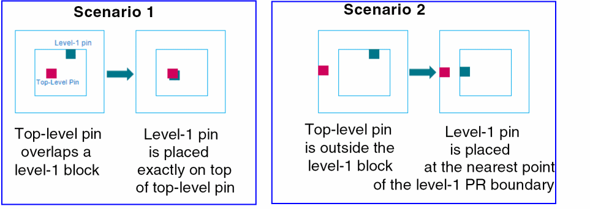
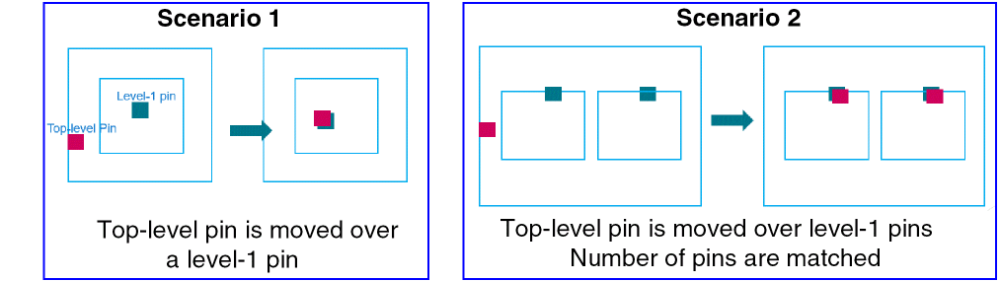
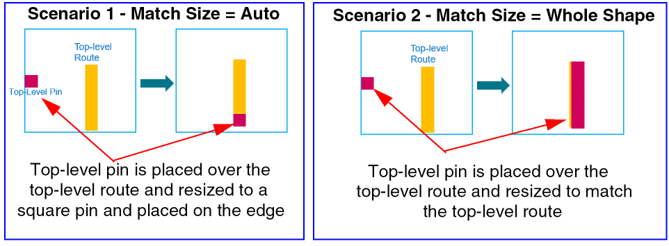
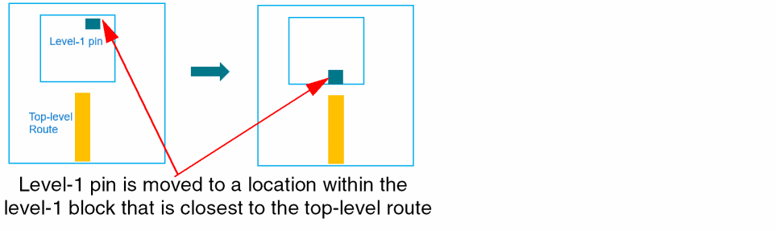
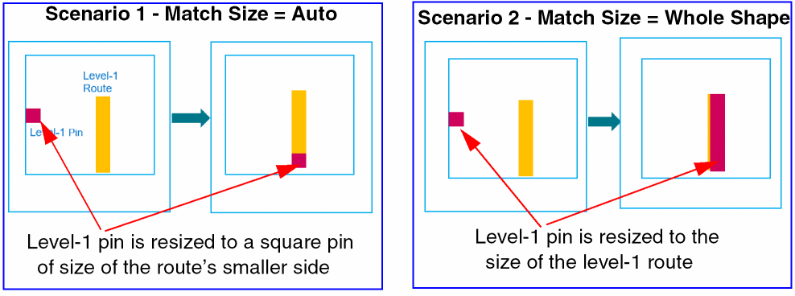
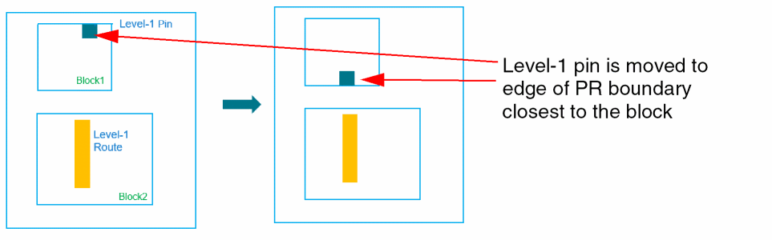

Repositioning Pins Using Assisted Move
(Virtuoso Layout Suite EXL) The Pin Browser in the Pin Tool includes the Assisted Move Location column, which specifies the current location of the pin. The assisted move command uses the Assisted Move Location option to move pins to predefined locations within the current design.

Before running the assisted move command, use the Pin Tool Options form to specify assisted move settings, for example, whether pins are to be resized or moved to a different layer when they are moved.
To move a pin using the assisted move command:
- Choose Plan – Pin Planning – Pin Tool. The Pin Browser is displayed.
- Double-click the Assisted Move Location entry for the required pin. A drop-down list appears.
- Select None (default) to retain the pin at its original position.
-
Select Top Level Pin to move the selected level-1 pin on top of its connected top-level pin or at the nearest point on the level-1 PR boundary.
The following pictures depict scenarios in which the assisted move command is used to move a level-1 pin on top of its connected top-level pin.
In Scenario 1, the top-level pin overlaps a level-1 block. The assisted move command places the level-1 pin exactly on top of the top-level pin.
In Scenario 2, a top-level pin is outside the level-1 block. The assisted move command places the level-1 pin at the nearest point on the level-1 PR boundary. -
Select Level-1 Pin to move the selected top-level pin on top of its connected level-1 pins.
The following pictures show the behavior when Match Number of Pins is selected in the Pin Tool Options form before running the assisted move command.
In Scenario 1, the selected top-level (red) pin is moved on top of the connected level-1 (blue) pin. The numbers of pins match, and so the Match Number of Pins setting has no impact here.
In Scenario 2, the numbers of pins do not match. Therefore, duplicate top-level pins are created to match the pin count and these pins are placed over the level-1 pins. -
Select Top Level Route to move top-level pins or level-1 pins to their connected top-level routes such that the pins overlap the routes.
In the following pictures, the assisted move command is used to move a top-level pin to a top-level route with Match Size selected in the Pin Tool Options form.
In Scenario 1, Match Size is set to Auto. The top-level pin is placed along the edge of the top-level route that is closest to the PR boundary. The pin is resized to a square pin that matches the smaller side of the top-level route.
In Scenario 2, Match Size is set to Whole Shape. The top-level pin is resized to match the top-level route.
In the following example, the assisted move command moves a level-1 pin to a top-level route. The pin is moved to a location on the level-1 PR boundary that is closest to the top-level route and is resized to a square-shaped pin with side matching the edge of the top-level route closest to the level-1 block.
 -
Select Level-1 Route Same Block to move level-1 pins over level-1 routes in the same block. The pin is placed along the edge of the route that is closest to the PR boundary. You can use the Pin Tool Options form to specify the pin resize settings.
 -
Select Level-1 Route Other Block to move a level-1 pin in a block to a level-1 route in another block. The level-1 pin is moved to the PR boundary edge that is closest to reference route and is resized to a square pin to match the side of the route.
 -
Set
astPinMovePickTargetFromSelectionto set the route that is nearest to the selected instances as the reference route.
Related Topics
astPinMovePickTargetFromSelection
Return to top